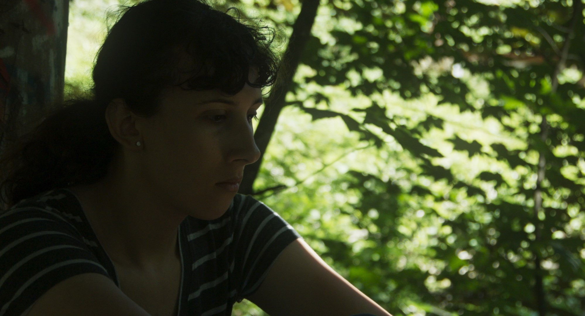
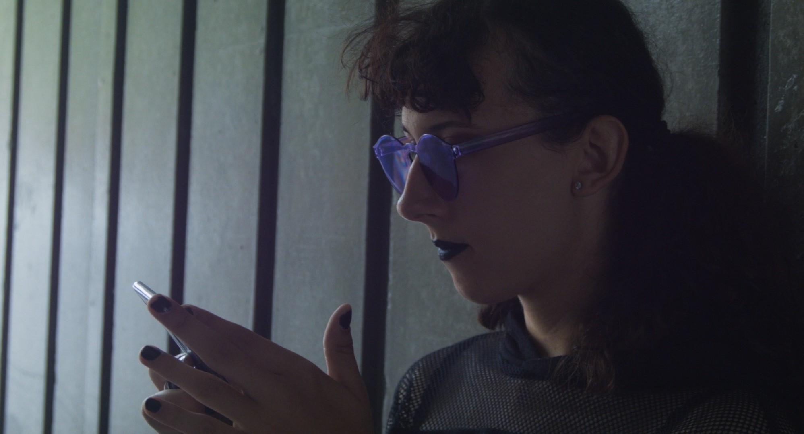
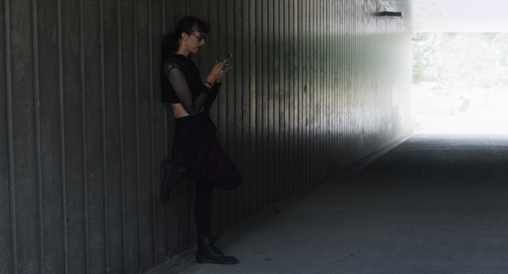
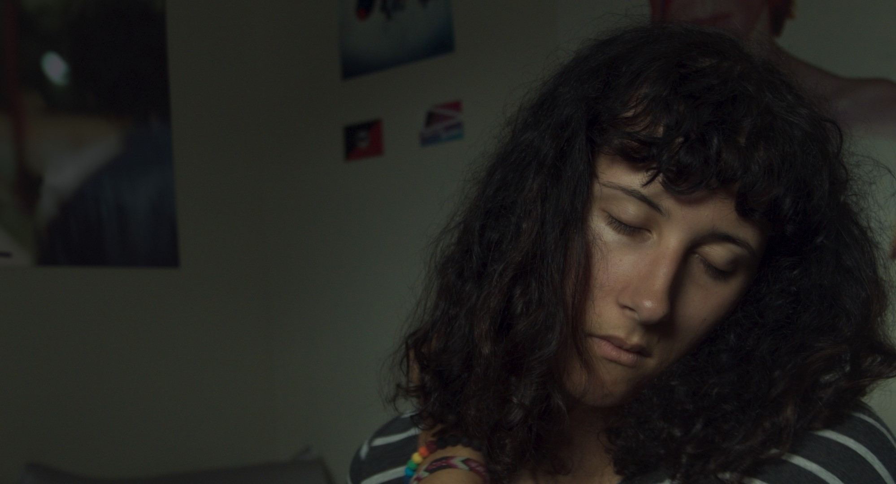
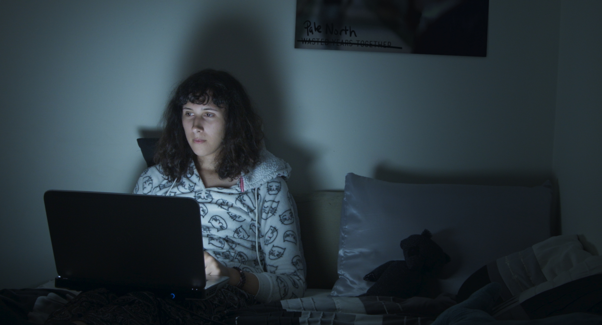

OFFICIAL SELECTON - 'VANCOUVER' QUEER FILM FESTIVAL - 2021
OFFICIAL SELECTION - TAG QUEER SHORTS FESTIVAL - 2021
OFFICIAL SELECTION - WICKED QUEER FILM FESTIVAL - 2021
OFFICIAL SELECTION - INSIDE OUT FILM FESTIVAL - 2021
OFFICIAL SELECTION - TRANS STELLAR FILM FESTIVAL
her voice (2020)
"her voice is an intimate portrait of dysphoria and discovery for a young trans woman going through vocal training."
"her voice brilliantly depicts the frustration of the young protagonist coming to terms with her gender dysphoria through minimalism and symbolism."
a film by nic peerson
    